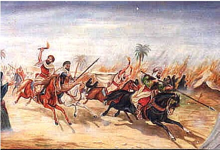

Battle of Thirupurambiyam
Battle of Thirupurambiyam was fought between the Pandya king Varagunavarman II and a confederacy of the Pallavas, Western
Ganga Dynasty and the Medieval Cholas in about 879 CE near modern-day Kumbakonam.
The Pandyas lost the battle with Varagunavarman II going into retirement.
The battle is considered to be a turning point in the history of South India for it precipitated
the fall of the Pallava and Pandya kingdoms and triggered the re-emergence of the Chola power in history after centuries of obscurity during Kalabhra rule.